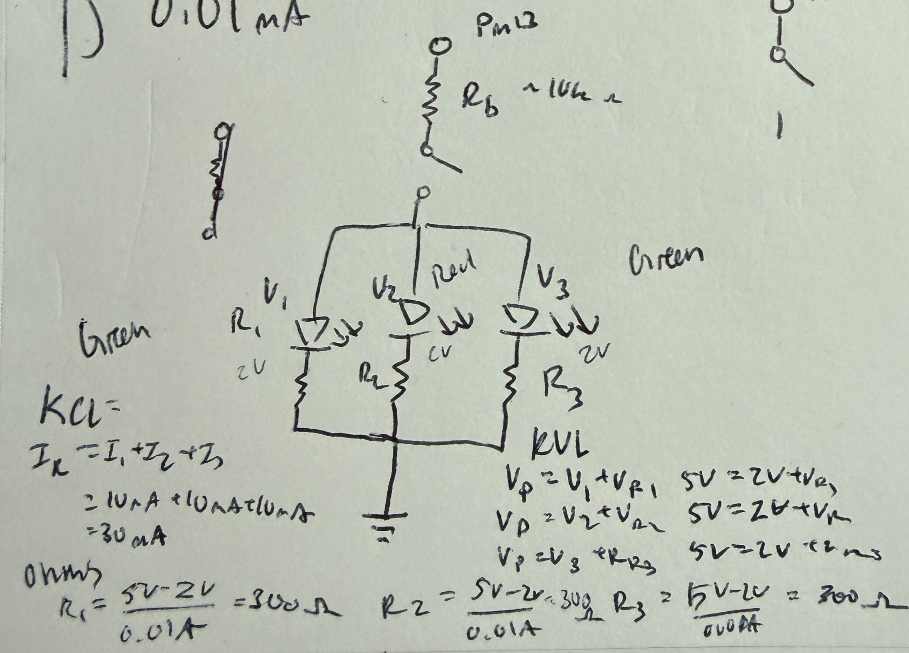
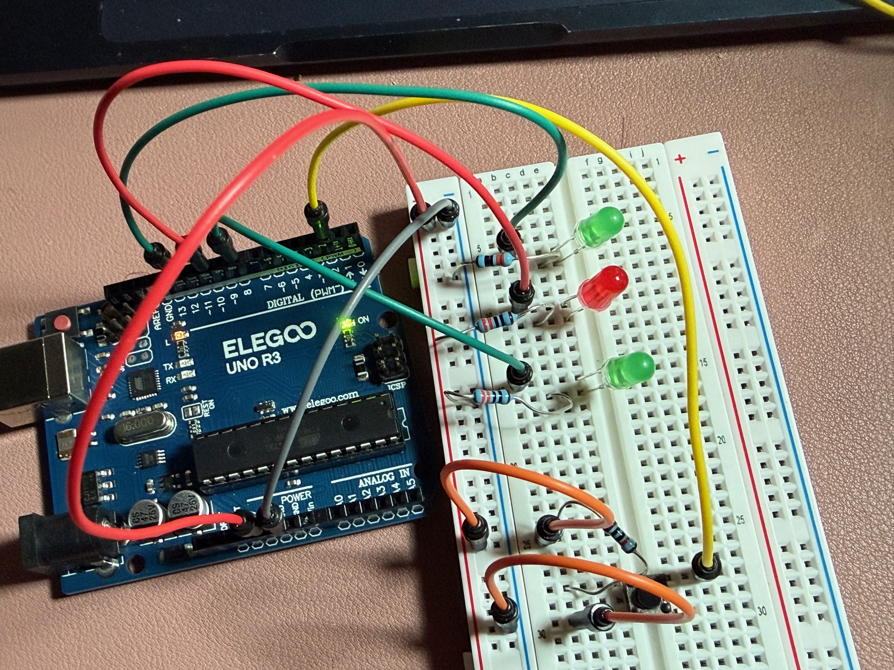
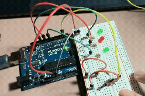
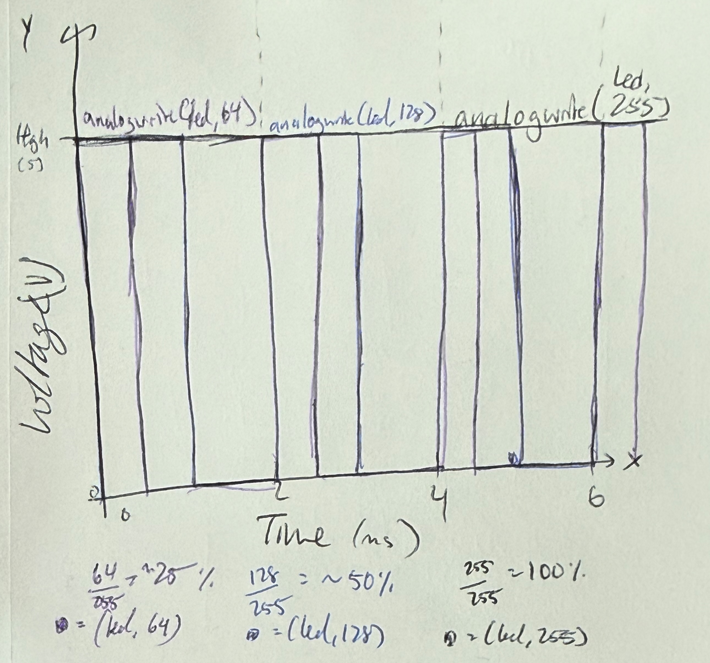

Here is all the documentation for assignment 2!

The schematic is composed of a button with a resistor that leads into three seperate LEDs and its resistors in parallel. The current for each LED was set to 10 mA for a total of 30mA to ensure it doesn't excede 40mA for an arduino pin. The calculations are included within the image, with the voltage for the greens (V1 and V3) and red (V2) set to 2V with a calculated resistance of 300 ohms. A resistor for the button was chosen to be 10k, which should be sufficently large enough to ensure that the button has a defined state.

When building the circuit, the resistor values calculated for the LEDs not match the resistors given in the kit so values close were chosen. Instead of 300 ohms, a resistor with 330 ohms was used. The button has a resistor of 10k.


// Setting the pushbutton pin as pin number 2
const int buttonPin = 2;
// Setting the led pin as pin number 12
const int ledPin = 12;
// Setting the fading LED pin as pin number 10
const int fadePin = 10;
// Setting the led pin as pin number 8
const int ledPin2 = 8;
// variables set for reading the pushbutton - subject to change
int buttonState = HIGH;
//Setting up the pins and outputs - runs only once when starting up arduino
void setup() {
//initializing ledPin as an output
pinMode(ledPin, OUTPUT);
//initializing fadePin as an output
pinMode(fadePin, OUTPUT);
//initializing ledPin2 as an output
pinMode(ledPin2, OUTPUT);
//initializing the pushbutton pin as an input
pinMode(buttonPin, INPUT);
}
//Contains the code that will continue to run on the arduino
void loop() {
//reads the state of the pushbutton
buttonState = digitalRead(buttonPin);
void loop() {
//reads the state of the pushbutton
buttonState = digitalRead(buttonPin);
// check if the pushbutton is pressed. If it is pressed, the buttonstate is LOW:
if (buttonState == LOW) {
// turn ledPin on
digitalWrite(ledPin, HIGH);
// turn ledPin on
digitalWrite(ledPin2, HIGH);
//fades in from min value to max in increments of 5
for (int fadeValue = 0; fadeValue <= 255; fadeValue += 5) {
// sets the value for fadePin, ranging from 0 to 250
analogWrite(fadePin, fadeValue);
//waits for 30 miliseconds to see the fading in
delay(30);
}
// fades pin out from max to min in increments of 5 points:
for (int fadeValue = 255; fadeValue >= 0; fadeValue -= 5) {
// sets the value for fadePin, ranging from 250 to 0
analogWrite(fadePin, fadeValue);
// waits for 30 miliseconds for the dimming to be seen
delay(30);
}
//else, it is off / buttonstate HIGH
} else {
// turn ledPin off
digitalWrite(ledPin, LOW);
// turn ledPin2 off
digitalWrite(ledPin2, LOW);
// turn fadePin off
analogWrite(fadePin, 0);
}
}
}